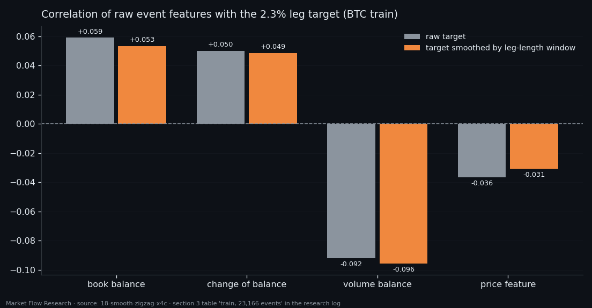
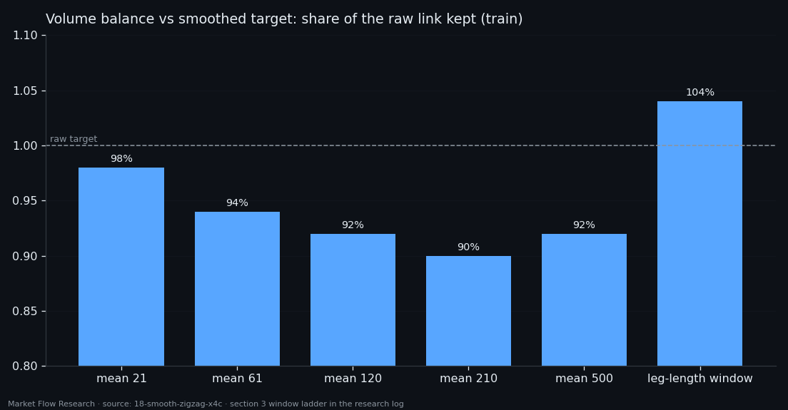
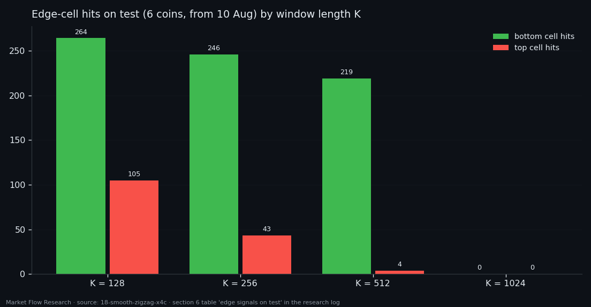

Four Numbers per Event and a 28-Cell Answer — Where the Signal Really Came From
The previous networks read each book feature through 13 exponential averages and topped out at a correlation of 0.29 with the leg target. Strip the averages away and the same features, raw per event, correlate at 0.09. So the link was made by the smoothing, not by the snapshot. We then gave a transformer six coins, 345,000 training windows and a new kind of output — 28 cells instead of one number — to stop it hiding in the middle. It stopped hiding. It did not start hitting: 5.4% of real pivot-zone signals, with false calls a day away.
① The snapshot barely knows the leg
Studies 16 and 17 fed their networks a 13 × 4 matrix: four book features, each smoothed by 13 EMAs up to 130 events. The strongest single link with the target there was |r| = 0.294 — volume balance under a 130-event EMA. This study asks how much of that is in the features themselves.
The class here is `210×210×4c`: one event, four numbers, no averaging — book balance, change of balance, volume balance and the price feature, all in [−1, 1]. The target is the same leg of a 2.3% zigzag on a 90-event EMA of price.
The answer on BTC train (23,166 events): the strongest feature is volume balance at −0.092, three times weaker than its smoothed version. The link was made by the smoothing. That makes sense: four numbers describe 210 seconds of the book, while the target lives on a 5-hour EMA of price. Without averaging, feature and target are simply on different time scales. The signs agree with study 16 on every variant: balance and its change positive, volume balance and price feature negative.

② Smooth each leg by its own length
The target twitches between pivots, and earlier studies calmed it with one fixed window for all legs. But 2.3% legs vary enormously: median 802 events, shortest 227, longest 2,431. One window undersmooths long legs and flattens short ones.
So here the window is set per leg, equal to the leg's own length — centred, so there is no phase lag. Looking forward is fine for a target, which is labelled in hindsight anyway; it would be a leak for a feature, and none is smoothed this way. Pivot zones are left untouched and nothing crosses from one leg into the next.
It is the strongest smoothing of the whole ladder — median window 802 events — and the only one that added to the link on train: volume balance −0.0957, 104% of the raw target's −0.0921; no fixed window did better than 98%. The honest caveat is in the same table: over all 39,879 events the gain disappears (83% kept), so this is an observation on train, not a ready target. What it does show is that the obstacle was the uniformity of the window, not its size.

③ 28 cells instead of one number
The minimum of MSE on a noisy target is the conditional mean, which is why every model so far clustered near zero: saying −0.9 and missing costs more than saying nothing. So the output changed. The range [−1, 1] is cut into 28 cells: the two edge cells are fixed at |y| ≥ 0.80 — literally the pivot zone — and the 26 in between are quantiles of the target, about 3.5% of events each. The label is soft (0.70 on the true cell, 0.15 on each neighbour), the loss is cross-entropy, and a "bottom" or "top" call is simply the most probable cell being 1 or 28.
Training moved to all six coins with gaps filled — 387,990 events, split by date (train up to 10 August, test after), about 345,000 training windows. Four transformers differed only in window length, under the same wall-clock budget.
On test (41,462 events): K = 128 is best with 264 bottom hits and 105 top hits — 369 of 6,783 real edge signals, 5.4%. Longer windows are strictly worse (369 → 289 → 223 → 0), because attention costs K²: in the same 40 minutes K = 1024 saw the data 7 times, K = 128 sixty. The model is not silent — it called "top" 3,374 times against 1,243 real ones — but a false call lands on average 444–890 events (about a day or more) from the nearest real signal of the same cell. Unusable as an entry. Four numbers per event are too few; the next studies change the features, not the length of the window.

Reproduce this study
- Research log (.md, Ukrainian): goal, data, plan, scripts, every confirmed stage and table — enough to rerun the study
- Reproduction kit (.zip): the study's scripts, project rules and base scripts that build every class
If this changed how you read the tape, the natural next step is Volume Is the Fuel — Not the Steering Wheel — We recorded the Binance order book every second for six coins over five months and ran eighteen tests on what volume really does.
Volume Is the Fuel — Not the Steering Wheel
We recorded the Binance order book every second for six coins over five months and ran eighteen tests on what volume really does.
About Market Research Lab — What We Collect and Why
Most market commentary is storytelling.
From Calm to Calm: a Standard for What Counts as a Signal (BTC)
We stopped defining market signals with a stopwatch.
The Wall That Goes Quiet: What Resting Liquidity Predicts
We measured resting limit liquidity sitting on both sides of the book second by second across six coins, and asked the only question that matters:….
Comments
Discussion is powered by GitHub. Enable it by adding secrets/giscus.json (repo IDs from giscus.app).